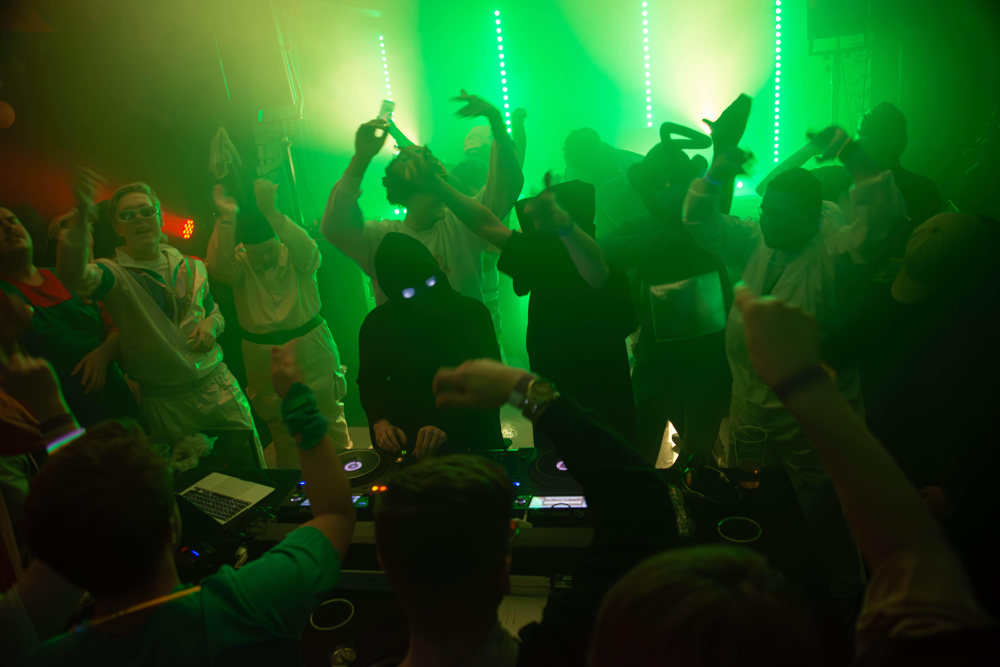
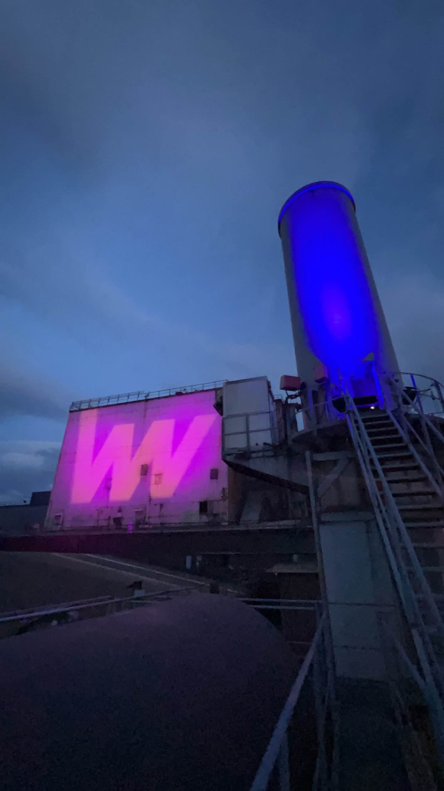
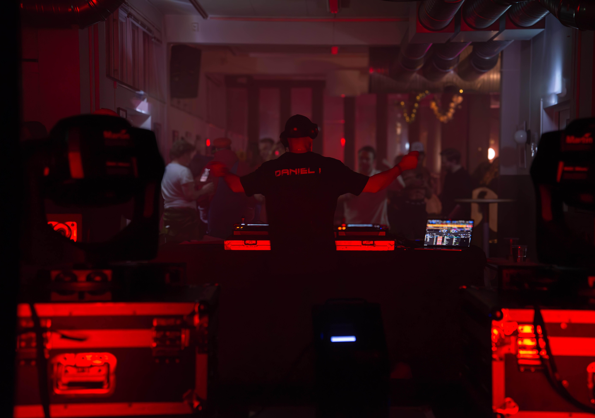

DJ · lyd · lys
Lyd, lys og DJ på Helgeland
DJ, lyd og lys til russearrangementer, bryllup, konserter og firmafest. Vi tar hele jobben – rigg, teknikk og nedrigg – slik at du bare trenger å glede deg til kvelden.
Det vi leverer
DJ
Musikk tilpasset arrangementet, fra første gjest til siste låt. Egen DJ, miksere og mikrofoner.
Les om DJ-tjenestenLyd og lys
Lydanlegget tilpasses arrangementet, og lyset rigges for lokalet – fra festlys til full scenerigg.
Les om lyd og lys NyttShowlaser klasse 4
Showlaser registrert hos DSA, operert av oss med egen strålevernkoordinator.
Les om showlaserEffekter
Røyk, haze og andre spesialeffekter som løfter lysbildet og stemningen i lokalet.
Les om effekterBak riggen



Vi tar hele jobben
Send forespørsel
Fortell oss om dato, sted og hva slags arrangement det er. Du får svar fra én kontaktperson.
Vi rigger
Vi planlegger teknikken for lokalet, kjører ut utstyret og rigger ferdig før gjestene kommer.
Du tar kvelden
Vi kjører lyd, lys og musikk gjennom kvelden, og rydder og rigger ned etterpå.